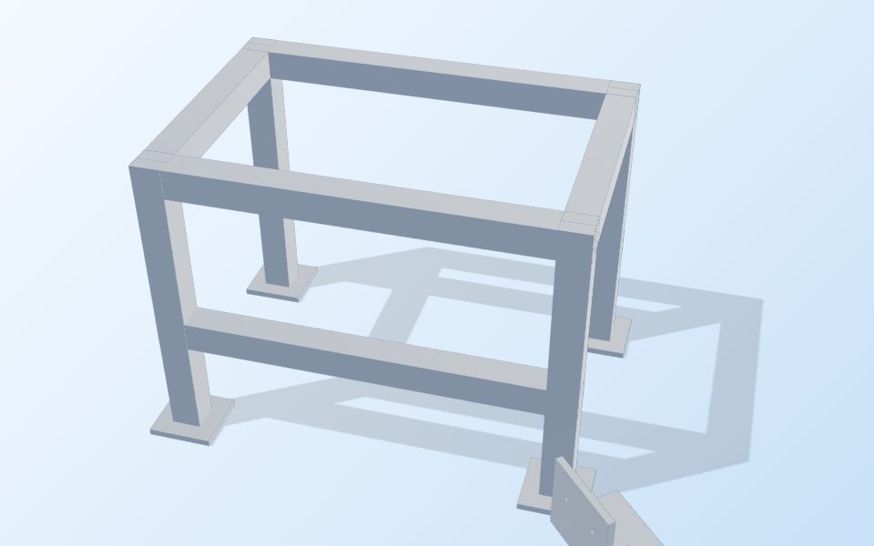
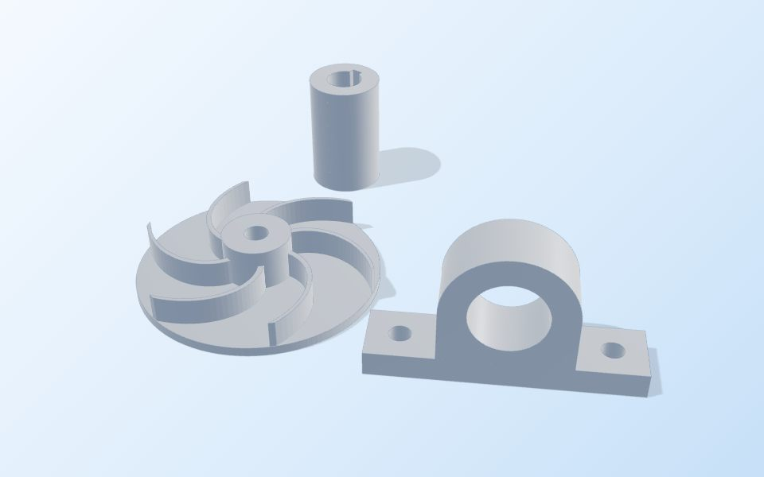
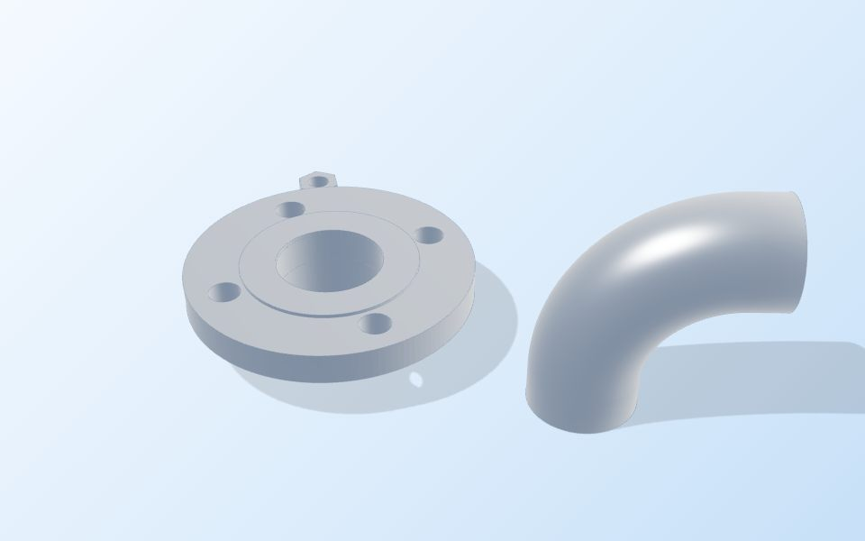
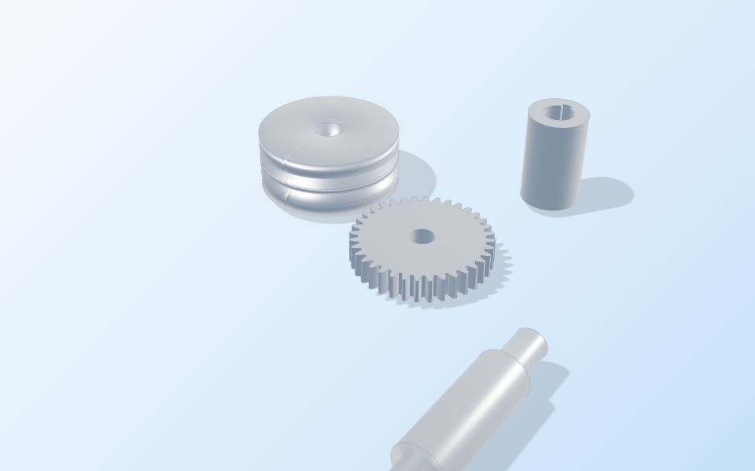
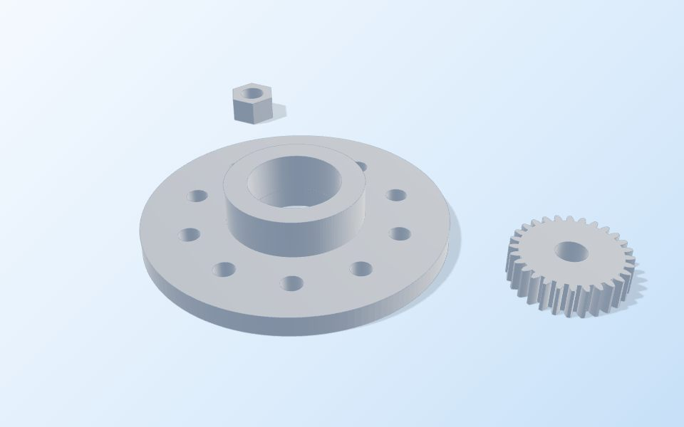

From first sketch to measured part.
ME designs, analyses, manufactures and inspects mechanical parts for steel fabrication, pumps, oil and gas, industrial machinery and transport. One team keeps the design intent intact from CAD to the finished part.
Parts and engineering for five industries
Each industry brings its own loads, standards and ways to fail. We design and make parts with those in mind.

Steel fabrication
Structural frames, platforms, brackets and welded assemblies, designed for fabrication and checked for strength.
Read more
Pumps and fluid handling
Impellers, casings, bearing housings, shafts and couplings, made to hold their fits and run true.
Read more
Oil, gas and piping
Flanges, fittings, pipe spools and threaded pipe work, made to your standard and pressure class.
Read more
Industrial machinery
Gears, shafts, pulleys, housings and replacement machine parts, including reverse-engineered spares.
Read more
Automotive and transport
Brackets, hubs, flanges and drivetrain parts for vehicles, trucks and off-highway equipment.
Read moreSix services, one set of data
Bring us a sketch, a worn-out part or a released drawing. Each service stands on its own, and they share one set of data when you need the full route.
Mechanical design
Parts, assemblies and machines taken from requirements to released CAD, drawings with GD&T and a bill of materials.
Engineering analysis
Structural and thermal FEA, fatigue checks and tolerance stack-ups that answer whether it will hold and fit.
Reverse engineering
Legacy or undocumented parts rebuilt from samples and 3D scans, with wear corrected out of the model.
Prototyping
Form, fit and function tested quickly with 3D printing, machined one-offs or soft tooling.
Manufacturing
CNC machining, sheet metal, welded fabrication and casting, from single parts to production batches.
Inspection and documentation
Dimensional inspection against the drawing, first-article reports and material records.
One part, followed from drawing to inspection
Switch between the stages to see one flange move from a toleranced drawing, through analysis and machining, to a measured part. Then turn it in 3D.
- Tight tolerances only where the part needs them
- Weak points found in CAD, not on the shop floor
- Setups planned around the datums
- Every critical feature measured and recorded
Tolerance what matters
Datums follow how the flange locates in service. Only the bore, face and bolt pattern carry tight callouts, which keeps the part affordable.
- Bore fit
- Ø40 H7 (+0.025 / 0)
- Bolt pattern
- Position Ø0.1 to A
- Datum face
- Flatness 0.02
- General tolerances
- ISO 2768-mK
Turn the drawing into a part
This is the same flange at the same sizes, as a live 3D model. Drag it to look around.
- Overall size
- Ø120 × 45 mm
- Material
- 6061-T6
Find the weak point early
Analysis shows where load concentrates, so a fillet or wall change happens in CAD, well before anyone cuts metal.
- Peak stress
- 168 MPa
- 6061-T6 yield
- 276 MPa
- Safety factor
- 1.64
Illustrative figures, not a real load case.
Plan the setups around the datums
Stock, workholding and operation order are chosen so that critical features are cut in one setup, against the surfaces the drawing measures from.
- Op 10
- Turn datum face A, rough OD
- Op 20
- Flip, turn hub, face to length
- Op 30
- Bore Ø40 H7, finish pass
- Op 40
- Drill 6 × Ø11 on Ø90 PCD
Measure against the drawing
Each critical callout is checked and recorded, so the report traces straight back to the drawing that defined it.
| Feature | Limit | Measured | Result |
|---|---|---|---|
| Ø40 H7 | +0.025/0 | +0.012 | Pass |
| Position | Ø0.100 | Ø0.041 | Pass |
| Flatness | 0.020 | 0.009 | Pass |
Sample data for illustration.
Free tools you can use right now
Thirteen engineering apps that run in your browser, with nothing to install. What you enter stays on your device.

Check My Part
Open your own STL file in 3D. See its size, volume and mass, get a rough machining guide, and send it to us for a quote. The file never leaves your device.
Open Check My PartSix stages, each with a clear gate
You see the work and approve it at each gate. If a requirement changes, the change is revised in the data and carried through to every downstream document.
Brief
We capture function, loads, environment, quantity, budget and target date.
Gate: agreed requirementsConcept
Layouts and options are compared on function, cost and manufacturability.
Gate: chosen conceptDetail design
Full CAD, analysis, DFM review and tolerance stack-up.
Gate: design reviewRelease
Drawings, bill of materials and revision control are issued.
Gate: Rev A signed offPrototype
A first article tests fit and function, and the results update the design.
Gate: first article acceptedProduction
Parts are made, inspected against the drawing, documented and delivered.
Gate: inspection report
Practical engineering, explained

Choosing the right tolerance
Tighter is not automatically better. How to decide what a feature really needs, and what each step down costs.
Read articlePreparing an STL for a quote
Units, mesh quality and closed solids: how to export a model that can be measured and quoted without back and forth.
Read article
Hole and shaft fits explained
Clearance, transition and interference fits in plain terms, with the H7 fits you will meet most often.
Read articleTell us what you need to make
A rough sketch and a clear problem are enough to start. More detail gives you a more accurate quote.
- What the part does and what it connects to
- Quantity, now and over the product's life
- Material, finish and operating environment
- CAD files or drawings, if you have them
- The date you need parts in hand
Have a 3D model? Check your part first to see its size and mass, and send the details with your request.